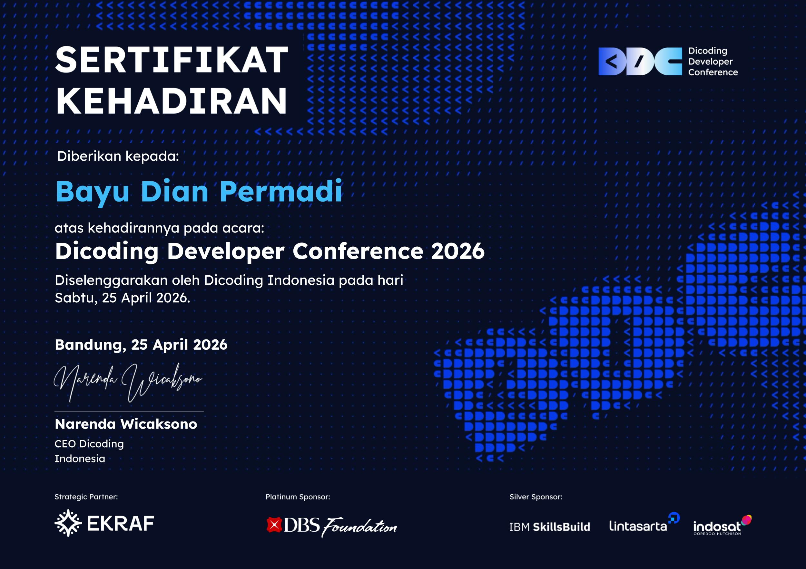
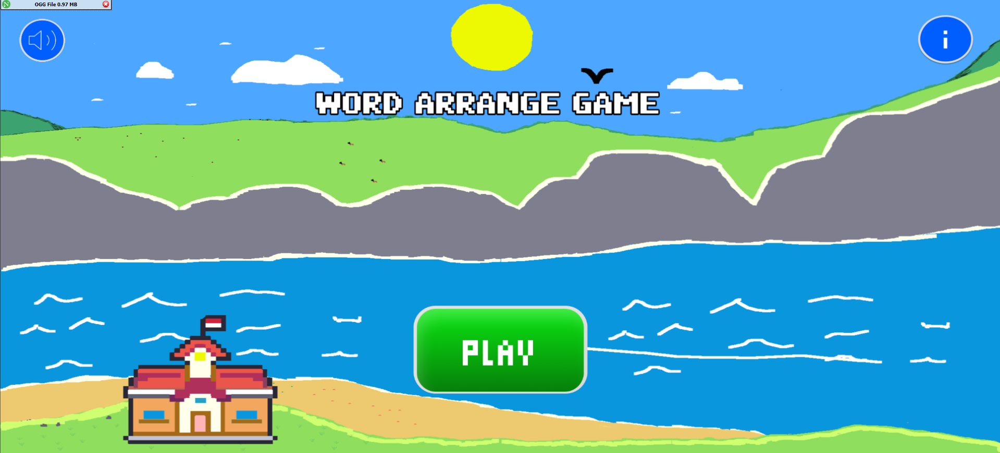

Tentang Saya
Halo, saya Bayu Dian Permadi, Saya adalah seorang siswa kelas XII jurusan Pengembangan Perangkat Lunak dan Gim (PPLG) yang memiliki minat besar dalam dunia pemrograman, baik di tingkat pengembangan web (full-stack) maupun sistem tingkat rendah (low-level systems). Selama masa sekolah, saya aktif mengeksplorasi berbagai bahasa pemrograman dan teknologi seperti containerization untuk menciptakan solusi yang efisien. Selain latar belakang akademis di bidang IT, saya juga memiliki pengalaman kerja lapangan sebagai Porter di Transsion Devices Indonesia, yang melatih disiplin, etos kerja keras, dan kemampuan manajemen waktu saya di lingkungan yang dinamis. Saya selalu antusias untuk belajar teknologi baru dan siap berkontribusi di dunia kerja.
Riwayat Pendidikan
SMKN 4 Padalarang
Jurusan Pengembangan Perangkat Lunak dan Gim (PPLG)
2026 - 2027
Target Karier
Setelah lulus SMK, saya menargetkan untuk memulai karier sebagai Cyber Security atau Software Engineer. Saya juga memiliki ketertarikan jangka panjang untuk mendalami bidang Systems Programming dan arsitektur sistem operasi.
Keahlian (Skills)
Hard Skills
Soft Skills
- Pemecahan Masalah (Problem Solving)
- Kerja Sama Tim & Adaptasi Cepat
- Mampu Menggunakan Bahasa Inggris maupun Indonesia Secara Baik
- Komunikasi Efektif
Pengalaman & Sertifikasi
Porter
Transsion Devices Indonesia
Bertanggung jawab dalam manajemen logistik dan barang di lingkungan pergudangan yang dinamis, memastikan efisiensi dan keamanan operasional.
Peserta Seminar IT/Teknologi
Berpartisipasi aktif dalam seminar pengembangan diri dan teknologi.

Proyek & Hasil Karya Terbaik
Membuat Game Edukasi
Bekerja sama dengan teman untuk membuat game edukasi bernama Word Arrange Game
Lihat Dokumentasi →